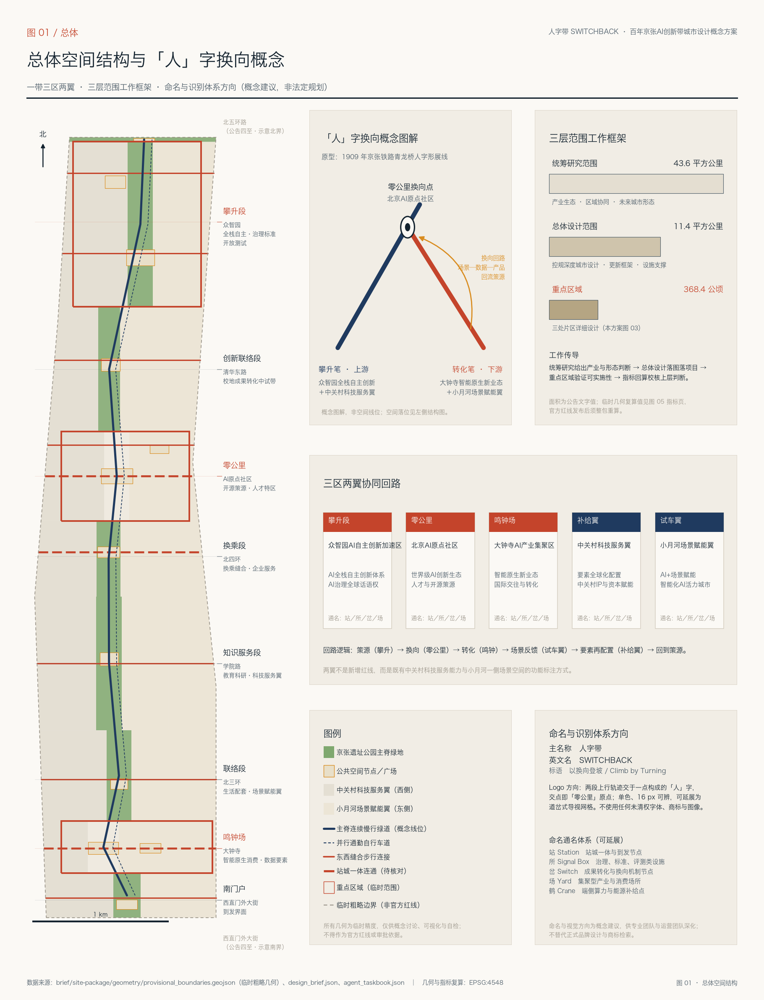
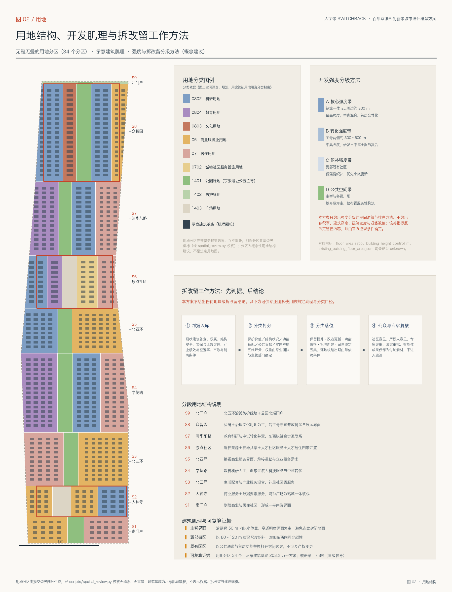
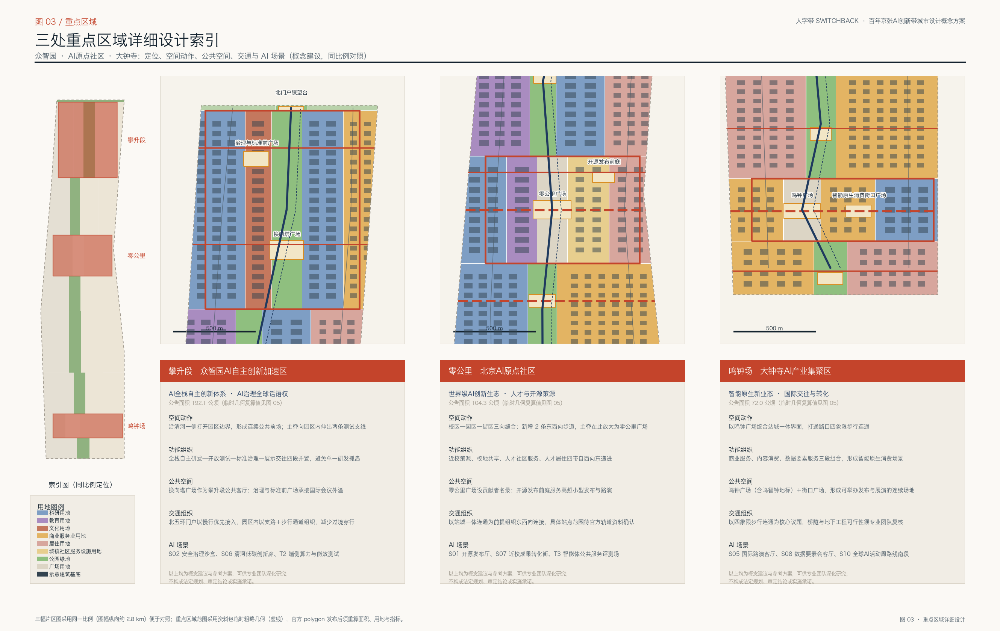
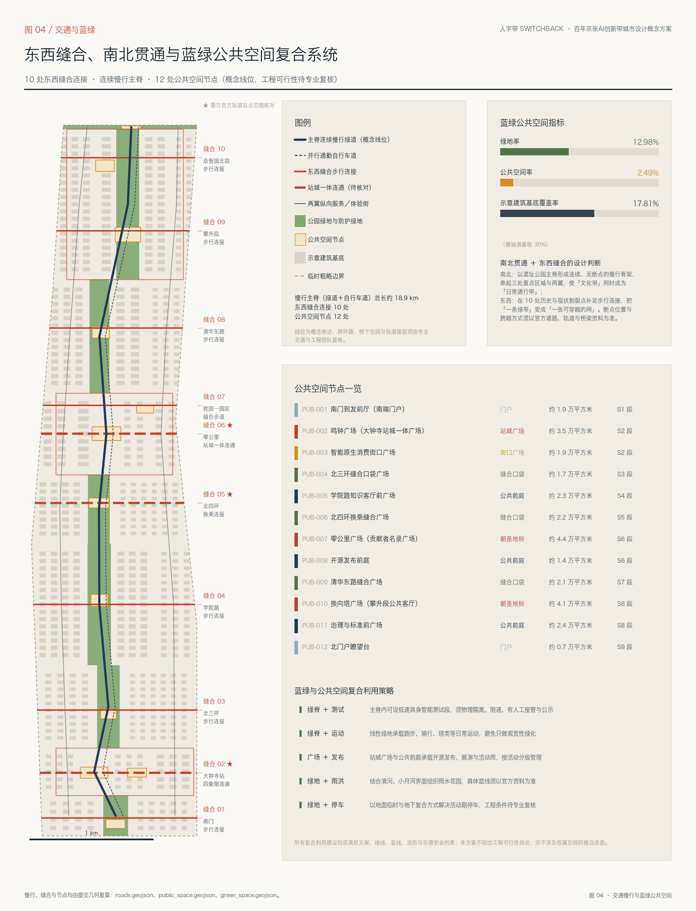
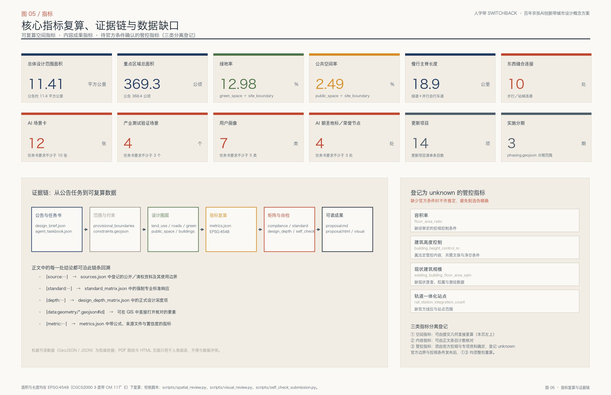

人字带 SWITCHBACK：百年京张AI创新带城市设计概念方案
以1909年京张铁路青龙桥「人」字形展线为原型，提出「人字带 SWITCHBACK」总体概念：以京张遗址公园为一条连续主脊，以众智园（攀升段）、北京AI原点社区（零公里）、大钟寺（鸣钟场）为三个换向锚点，以中关村科技服务翼与小月河场景赋能翼为两翼，用九段带状用地结构、十处东西缝合连接与十二处公共空间节点，把「一条绿带」变成「一张可穿越、可运营、可换向的创新网络」。全部空间结论均可回溯到提交的九个 GeoJSON 图层与可复算指标；容积率、建筑高度、地块拆改留等法定管控内容一律登记为待官方条件确认。
人字带 SWITCHBACK：百年京张AI创新带城市设计概念方案
> 一句话概念：1909 年，詹天佑用「人」字形展线，让当时的机车爬上了原本爬不上去的坡；2026 年，这条带要解决的仍然是一个「坡度问题」——从原始创新到产业转化、从模型能力到城市生活，中间那段最陡的爬升，靠的不是拉直，而是**换向**。
> 边界声明：本方案由 AI 智能体生成，属开放共创建议。全部空间落地内容均为**概念建议、参考方案或可供专业团队深化研究的素材**，不替代正式规划，不构成政府审定结论、审批依据或实施承诺。
一、设计依据与资料清单
本方案的第一依据是《百年京张AI创新带城市设计国际方案征集资格预审公告》[source:OFFICIAL-ANNOUNCEMENT]，第二依据是《面向全球智能体开展百年京张AI创新带城市设计开源征集任务书摘录》[source:AGENT-TASKBOOK]。前者确定了三层范围、公告面积、四至文字与 1.3／1.4／1.5 三组设计任务；后者确定了三大定位、五大功能、三区两翼、共创公约与 agent.1–agent.6 六项必答任务。两者在专业口径上分别对应 [standard:PROJECT-OFFICIAL-ANNOUNCEMENT] 与 [standard:PROJECT-AGENT-OPEN-CALL-TASKBOOK]。方案生成前，智能体先读取了资料包 [source:SITE-PACKAGE] 中的用地分类、图层、道路等级、建筑类型与来源类型枚举，读取了公开资料可用性登记表 [source:SOURCE-REGISTRY]，并以事实包与缺资料清单 [source:PROCESSED-FACT-PACK] 作为任务与缺口的阅读导航层。
**必须先说明的一件事：本方案使用的是临时粗略边界。** 公告只给出了文字四至与面积，没有附官方 polygon。因此 geometry/site_boundary.geojson 的几何来自 [source:BOUNDARY-SOURCE]，三处重点区域的几何来自 [source:KEY-AREA-SOURCE]，二者在提交包中一律标注 official_boundary=false、geometry_role=provisional_constraint、boundary_precision=provisional_rough，并写入 usage_note 说明其不得作为官方红线、审批依据或精确面积复算依据，对应假设 A-BOUNDARY-001。可读的空间入口是 [data:geometry/site_boundary.geojson#SITE-001] 与 [data:geometry/key_areas.geojson#PROV-KEY-002]，可读的数值入口是 [metric:site_area_sqm] 与 [metric:key_area_total_sqm]。这一缺口来自组织方尚未发布官方数据，不由参赛方造成，也不影响内容评分；但一旦官方边界发布，用地剖分、绿地、公共空间、建筑、道路、分期与全部指标都必须整包重算，而不是只替换一个文件。这一条同时写入了 self_check.json 的 OFFICIAL_DATA_GAP 检查项，以及 [depth:existing_conditions_diagnosis] 的现状与缺口诊断。
资料使用的纪律有三条。第一，登记为 provisional_only 的资料只能用于生成、展示与自检，不能升级为官方边界、法定控制或正式评分依据。第二，登记为 background_only 的资料——本方案中即全球创新街区案例 [source:GLOBAL-DISTRICT-CASES]——只作定性参照，方案中不出现任何投资额、产值、企业名单或财政承诺类数字（假设 A-ECOSYSTEM-001）。第三，凡是缺少官方条件的管控内容，宁可登记为 unknown 并写明原因，也不用推定值制造精确感；这一原则由 [standard:MOHURD-CONTROL-DETAILED-PLANNING] 与 [standard:MOHURD-ARCH-DESIGN-DEPTH-2016] 共同约束，具体落在 [metric:building_coverage_ratio] 之外的容积率、建筑高度、现状建筑规模三项 unknown 指标上。

二、三层范围工作框架
公告把工作分成统筹研究范围（约 43.6 平方公里）、总体设计范围（约 11.4 平方公里）与重点区域范围（约 368.4 公顷）三层 [source:OFFICIAL-ANNOUNCEMENT]。本方案不把它们当成三套彼此独立的图纸，而当成一条**判断—落图—验证—回算**的传导链，对应 [depth:three_level_scope_framework]。
统筹研究层负责**判断**：AI 产业生态的结构性问题是什么，未来城市形态应当如何回应。这一层不新增红线，输出的是战略判断与命名识别方向。总体设计层负责**落图**：把判断变成可审查的用地布局、更新项目、设施支撑与风貌引导，深度对齐控制性详细规划的城市设计深度 [standard:MOHURD-CONTROL-DETAILED-PLANNING]。重点区域层负责**验证**：在三处片区里检验前两层的判断是否真的落得下去——功能是否有空间、交通是否连得通、公共空间是否成体系。最后由指标层完成**回算**：把 [data:geometry/site_boundary.geojson#SITE-001] 与 [data:geometry/land_use.geojson#LU-001] 等图层的复算结果反向校核上层判断，若对不上，则修改的是判断而不是数据。
三层范围的量级关系是：重点区域面积约为总体设计范围的 3.2%，总体设计范围约为统筹研究范围的 26%。这意味着重点区域必须承担「示范密度」而不是「面积贡献」——它们的作用是把整条带的机制在小尺度上跑通。本方案的临时几何复算值为 [metric:site_area_sqm] 与 [metric:key_area_total_sqm]，与公告文字值属同一量级，差值来自临时矩形化，已在假设 A-BOUNDARY-001 中说明。约束条件在设计前已锁定并写入 [data:geometry/constraints.geojson#CON-001]（京张遗址走廊示意中心线）与 [data:geometry/constraints.geojson#CON-002]（依据公告四至文字定位的示意北界），全部标注为低置信度示意线。
在这个框架下，本方案提出的总体概念是**人字带 SWITCHBACK**。「一带」不是新画的红线，而是把三层范围转译成一种工作方法与空间叙事：**一脊、三区、两翼、九段、十缝合**。一脊是京张遗址公园的连续绿地主脊；三区是公告确定的三处重点区域；两翼是任务书 [source:AGENT-TASKBOOK] 提出的中关村科技服务翼与小月河场景赋能翼；九段是本方案为便于设计与管理，沿主脊自南向北划分的九个工作段（S1 南门户、S2 鸣钟场、S3 北三环、S4 学院路、S5 北四环、S6 原点社区、S7 清华东路、S8 众智园、S9 北门户）；十缝合是十处东西向的步行与站城连通，见 [metric:east_west_stitch_count]。
三、统筹研究范围产业与未来城市研究
**这是 agent.1 与 agent.2 的正面回应。**
**总体概念与命名体系（agent.1）。** 概念原型是京张铁路青龙桥的「人」字形展线：面对超出当时机车能力的坡度，工程上的解法不是把线路拉直，而是折返换向，让列车在两段展线之间改变方向、重新获得爬升能力。今天这条带面对的「坡度」是创新链条中最陡的一段——从原始创新到可用产品、从模型能力到城市生活。本方案主张：这一段同样不能靠「拉直」（把研发、转化、场景简单串联），而要靠「换向」（在特定节点上让要素改变角色）。因此总体概念定名为 **人字带**，英文名 **SWITCHBACK**，标语「以换向登坡 / Climb by Turning」。三区在概念上分别是「攀升段」（众智园，上游策源与自主体系）、「零公里」（AI原点社区，换向点与生态原点）、「鸣钟场」（大钟寺，下游转化与对外发声）；两翼是「补给翼」（中关村科技服务翼）与「试车翼」（小月河场景赋能翼）。命名通名体系取自铁路语汇并可无限延展：**站**（Station，站城一体与到发节点）、**所**（Signal Box，治理、标准与评测类设施）、**岔**（Switch，成果转化与换向机制节点）、**场**（Yard，集聚型产业与消费场所）、**鹤**（Crane，源自铁路水鹤，用于端侧算力与能源补给点）。Logo 方向是由两段上行轨迹交于一点构成的「人」字，交点即「零公里」原点；要求单色可用、16 px 可辨、可延展为道岔式导视网格。本方案不使用任何未清权的字体、商标、肖像与图像，命名与视觉方向属概念建议，不替代正式品牌设计与商标检索。三大定位在空间上的对应关系是：**百年京张文化带**＝主脊（南北叙事轴）、**都市AI生活体验带**＝十处东西缝合（横向日常轴）、**AI融合创新带**＝换向回路（要素流动）。空间证据见 [data:geometry/key_areas.geojson#PROV-KEY-001] 与 [metric:key_area_count]。
**五大功能与三区两翼协同回路（agent.1）。** 五大功能不是并列的口号，而是回路上的五个工位：AI全栈自主创新体系落在攀升段，世界级AI创新生态落在零公里，AI+场景赋能新范式落在试车翼，智能化AI活力城市落在全带公共空间与鸣钟场，AI治理全球话语权落在攀升段的「所」类设施与全球活动体系。回路逻辑是：策源（攀升）→ 换向（零公里）→ 转化（鸣钟）→ 场景反馈（试车翼）→ 要素再配置（补给翼）→ 回到策源。这条回路的价值在于它是**闭合**的：场景中产生的数据与失败案例必须能回到策源端，否则「场景开放」只是展示。
**全球AI创新生态案例（agent.2，6 个）。** 以下为公开常识性定性参照 [source:GLOBAL-DISTRICT-CASES]，不引用任何未经核验的数字（假设 A-ECOSYSTEM-001）：①**伦敦国王十字知识片区**——铁路场站与货运用地的长期更新，把知识机构、图书馆与科技企业组织在一个连续步行系统上，对本方案的启示是「遗产轨道空间可以成为知识密度的骨架」；②**巴黎 Station F**——由铁路货运站建筑改造而成的大型创业园区，启示是「单一大跨度遗产空间适合承载高流动性的创业生态」；③**新加坡 one-north**——政府主导、分片区推进、以真实城市空间作为产业试验场，启示是「园区必须留出可被反复改写的测试空间」；④**蒙特利尔 Mila 学术引领生态**——以学术机构为核心组织人才与企业的聚集，启示是「近校型片区的第一资产是人而不是楼」；⑤**慕尼黑 Munich Urban Colab**——城市、高校与企业共建的创新协作空间，启示是「协作空间需要明确的公共属性与开放规则」；⑥**日本柏之叶智慧城市**——以校地共建与场景实证推进的新城，启示是「场景实证必须配套长期的数据与治理机制」。六个案例中有两个直接是铁路遗产更新（①②），这是本方案选择「以轨道语汇构建命名与叙事体系」的重要理由。
**AI创新生态图谱与要素机制（agent.2）。** 生态图谱按「策源—转化—产业—场景—服务」五环组织：策源环（高校院所与实验室，落在 S6、S7 的教育科研用地）、转化环（中试与孵化，落在 S6、S7 东侧的科研用地）、产业环（全栈自主与智能原生业态，落在 S8 与 S2）、场景环（公共空间与试车翼，落在主脊与东侧）、服务环（补给翼的科技服务、法务、知识产权与资本，落在西侧）。土地、空间、产业、资金、人才、算力、数据、场景八类要素的空间对应是：土地与空间由用地剖分承载 [data:geometry/land_use.geojson#LU-014]；算力由「鹤」类端侧算力驿站承载；数据与场景由试车翼与公共空间承载；资金、人才与产业服务由补给翼承载。用地结构的可复算证据是 [metric:land_use_polygon_count]，专业口径依据 [standard:MNR-LAND-USE-CLASSIFICATION-GUIDE]。
**适配人工智能的未来城市形态（1.5.1.2）。** 本方案对「未来城市形态」的判断是：AI 不会让城市变得更分散，反而会提高「可被观察、可被试验、可被回滚」的公共空间的价值。因此形态策略是「一条连续的、可被反复改写的公共轴」，而不是若干个封闭的智慧园区。可感知、可交互的 AI+ 交通系统落在主脊与十处缝合上 [data:geometry/roads.geojson#ROAD-001]，连续无界的绿色空间体系落在主脊绿地上 [data:geometry/green_space.geojson#GREEN-001]，量级见 [metric:slow_traffic_spine_length_m] 与 [metric:green_space_area_sqm]，深度要求见 [depth:overall_spatial_structure]。
四、总体设计范围城市更新与控规深度城市设计
总体设计范围要求达到控制性详细规划的城市设计深度 [standard:MOHURD-CONTROL-DETAILED-PLANNING]，同时须统筹景观风貌、公共空间与建筑布局 [standard:MOHURD-URBAN-DESIGN-MEASURES]。本方案的落图方式是**九段带状结构**：以主脊为中轴，把 11.4 平方公里的带状范围沿南北切成九段，每段再横向分为「西翼—主脊—东翼」若干列，形成 34 个用地分区，完整覆盖提交边界、互不重叠、相邻分区共享边界坐标，见 [data:geometry/land_use.geojson#LU-020] 与 [metric:land_use_polygon_count]，深度项为 [depth:land_use_layout]。
选择带状分段而不是自由分区，有三个理由。其一，场地本身就是一条宽约 1.3 公里、长约 9.7 公里的走廊，任何忽视其线性特征的结构都会在实施中被交通与权属现实打回。其二，分段可以让「更新时序」与「空间结构」天然对齐——每一段都可以独立启动、独立评估。其三，分段边界与三处重点区域的南北界完全对齐（S2＝大钟寺、S6＝原点社区、S8＝众智园），使重点区域成为整体结构的自然组成部分，而不是外挂的三块飞地。
**产业功能布局判断（1.5.2.1）。** 功能配比的原则是「策源在西、转化居中、消费在东南、治理在北」：西侧贴近高校与中关村既有服务能力，布置教育科研与科技服务；中部沿主脊布置研发与中试的复合界面；东南侧结合站点布置商业服务、内容消费与数据要素服务；北端的众智园承担全栈自主与治理标准职能。这一判断在用地上表现为 S4、S6、S7 的西列以 0804 教育用地与 0802 科研用地为主，S2 以 05 商业服务业用地与 0802 科研用地组合，S8 出现 0803 文化用地承载治理与标准展示设施。
**城市更新总体框架（1.5.2.2）。** 更新潜力的识别逻辑是「三看」：一看是否紧邻主脊却背对主脊（界面封闭型），二看是否位于缝合口两侧却不可穿越（连通阻断型），三看是否处于站点 300 米内却功能单一（效率损失型）。三类问题分别对应界面打开、通道补足与功能垂直混合三类更新动作，共形成 14 项更新项目 [metric:renewal_project_count]，分三期推进 [metric:phase_count]，空间范围见 [data:geometry/phasing.geojson#PHASE-001]。需要强调的是：本方案识别的是**问题类型与空间位置**，不是具体地块的处置结论；后者须待现状普查、权属与控规条件补齐后由专业团队完成。
**建筑规模与承载能力（1.5.2.2）。** 提交的 buildings.geojson 是示意性的肌理颗粒，用于表达街区尺度与开发强度量级，其总量为 [metric:building_footprint_area_sqm]、覆盖率为 [metric:building_coverage_ratio]，空间入口见 [data:geometry/buildings.geojson#BLDG-001]。它**不是**现状建筑，也**不是**规划建筑规模。区域规划建筑总规模、AI 产业空间规模与职住商配比等结论，依赖现状建筑普查与控规条件，本方案登记为待确认（假设 A-BUILDING-001、A-CONTROLS-001），对应深度项 [depth:development_intensity_controls]。

五、重点区域详细设计
三处重点区域是公告的必选项，须达到规划综合实施方案的城市设计深度，对应 [depth:three_key_area_detailed_design]，几何来源为 [source:KEY-AREA-SOURCE]，总量见 [metric:key_area_total_sqm]。三处片区在本方案中分别承担回路上的不同工位，图 03 以同一比例对照表达，便于评审判断它们的尺度关系。
**（一）众智园AI自主创新加速区 · 攀升段（约 192.1 公顷，1.5.3.1）。** 定位是「花园型全栈自主创新街区」。空间动作有三：一是沿清河一侧把园区边界打开，形成连续的公共前场，让「园区」变成「街区」；二是主脊在此向园区内伸出两条测试支线，使开放测试不必另辟场地；三是在 S8 段西列布置 0803 文化用地，承载标准制定、安全评测与治理展示这类「所」型设施——把治理能力变成可参观、可预约、可监管的公共内容，而不是关起门的会议。公共空间以换向塔广场（PUB-010）为攀升段公共客厅，治理与标准前广场（PUB-011）承接国际会议外溢。对外交通以北五环门户慢行优先接入，园区内部以支路加步行通道组织，减少过境穿行。绿色空间服务 AI 的场景包括 S06 清河低碳创新廊与 T2 端侧算力与能效测试。空间证据见 [data:geometry/key_areas.geojson#PROV-KEY-001]。
**（二）北京AI原点社区 · 零公里（约 104.3 公顷，1.5.3.2）。** 定位是「近校型成果转化与人才社区」，也是整条带的换向点。空间动作是**三向缝合**：新增 2 条东西向步道（ROAD-010、ROAD-011），把校区、园区、街区连成一体；主脊在此放大为「零公里广场」，即用地上的 1403 广场用地。功能自西向东递进为近校策源、校地共享、人才社区服务、人才居住四带，回应任务书对人才特区、成果转化、开源体系与品牌活动的要求。公共空间以零公里广场（PUB-007，设贡献者名录）与开源发布前庭（PUB-008，服务高频小型发布与路演）为核心。交通以站城一体连通为前提组织东西向连接，但具体站点范围须待官方轨道资料确认（假设 A-MOBILITY-001）。低扰动有机更新的实施模式体现为：优先做「通道与首层」，暂不触碰权属结构。空间证据见 [data:geometry/key_areas.geojson#PROV-KEY-002] 与 [metric:east_west_stitch_count]。
**（三）大钟寺AI产业集聚区 · 鸣钟场（约 72.0 公顷，1.5.3.3）。** 定位是「城市型智能经济与国际交往街区」。空间动作是以鸣钟广场（PUB-002）统合站城一体界面，并打通路口四象限的步行连通（ROAD-006）。功能组织为商业服务、内容消费、数据要素服务三段组合，回应智能体、智能终端、内容消费等 AI 原生业态与数据要素流通机制的要求。公共空间由鸣钟广场与智能原生消费街口广场（PUB-003）构成可举办发布与展演的连续场地，规划绿地的复合利用在此以「广场＋发布」策略体现。四象限步行连通是本片区的核心议题，但桥隧与地下空间的工程可行性必须由专业团队复核，本方案不给出工程结论。空间证据见 [data:geometry/key_areas.geojson#PROV-KEY-003] 与 [metric:public_space_area_sqm]。

六、AI 创新生态、人才画像与 AI+ 场景
**这是 agent.3 的正面回应，同时覆盖公告 1.3.3 与自选区域场景设计。** 数量证据为 [metric:ai_scenario_card_count]、[metric:industry_test_scenario_count] 与 [metric:persona_count]。
**用户画像（7 类）。** ①**开源开发者**：需要发布、协作、测试与社区声誉；空间响应为开源发布前庭、公共代码墙、夜间可用协作空间；边界是不采集个人行为轨迹，活动数据只做聚合统计。②**初创团队创始人**：需要低成本办公、算力入口与产品试验场；空间响应为共享测试场、「鹤」驿站、标准治理咨询窗口；边界是算力与数据服务须另行授权。③**高校师生与博士后**：需要成果转化、跨校协作与日常慢行；空间响应为校区—园区缝合步道、成果转化街、AI 教育体验点；边界是校园数据与科研成果须经授权。④**头部企业国际访客**：需要展示、商务、接待与招聘；空间响应为国际路演客厅、站点接驳、企业周边公共环境提升；边界是企业标识与案例须清权。⑤**周边居民（含老年人与儿童照护者）**：需要通勤、休闲、社区服务与低扰动更新；空间响应为主脊慢行环、社区服务嵌入、照护友好的休憩与如厕设施、夜间照明与活动分级；边界是不将居民画像用于商业推荐。⑥**通勤者与骑行者**：需要连续、安全、可预期的路径；空间响应为并行通勤自行车道与十处缝合连接；边界是导航与诱导信息须可解释、可关闭。⑦**城市运营与管理者**：需要设施状态、活动安全与公共空间使用情况；空间响应为运维智能体与公共仪表盘；边界是所有识别结果均须人工复核后方可作为处置依据。
**AI 场景卡（12 张）。** S01 **开源发布厅**（零公里）：面向高校、开源社区与初创团队的发布、代码贡献展示与小型路演。S02 **安全治理沙盒**（攀升段）：把标准制定、安全评测与红队测试转译为可参观、可预约、可监管的展示与协作节点。S03 **端侧算力驿站「鹤」**（全带）：分布式算力与能源补给点，结合公共服务与低碳策略，作为待深化的新型基础设施原型。S04 **无断点慢行导航**（主脊）：以可解释导视与低侵入传感识别慢行断点、拥挤节点与无障碍需求。S05 **国际路演客厅**（鸣钟场）：服务智能体、智能终端与内容消费企业的展示、洽谈与媒体发布。S06 **清河低碳创新廊**（攀升段）：绿色空间、雨洪、步行骑行与低碳展示的复合界面。S07 **近校成果转化街**（零公里）：孵化、法务、知识产权与投融资服务的一条街式组织。S08 **数据要素会客厅**（鸣钟场）：以合规、授权、可审计为前提的数据要素与数字资产服务界面。S09 **AI 生活服务样板街**（补给翼）：把 AI+医疗、教育、法律、生活服务落到可运营的小尺度街区。S10 **全球AI活动周路线**（全带公共空间）：从遗址文化、开源社区、产业展示到国际路演的可步行体验线。S11 **校园—园区通勤伴随**（零公里与试车翼）：多模式接驳与错峰引导，减少高峰期主脊冲突。S12 **公共空间运维智能体**（全带）：设施巡检、绿化养护与活动安全的辅助识别，结论一律人工复核。场景的空间载体分别落在 [data:geometry/public_space.geojson#PUB-007]、[data:geometry/roads.geojson#ROAD-005] 与 [data:geometry/green_space.geojson#GREEN-005]，比例证据见 [metric:public_space_ratio] 与 [metric:green_ratio]。
**产业测试验证场景（4 个）。** T1 **低速具身智能公共测试廊**：在主脊内设物理隔离、限速、有人工接管与现场公示的测试段，解决「机器人没有真实城市场地可测」的问题。T2 **端侧算力与能效测试**：在「鹤」驿站验证潮汐调度、散热与余热利用，测试对象是能效而不是算力峰值。T3 **智能体公共服务评测场**：面向政务与公共服务智能体的红队评测与人工复核流程验证，产出可公开的评测方法而非排名。T4 **智能原生消费与内容生成合规测试**：在鸣钟场验证内容生成的授权、标识与可追溯机制。四个测试场景的共同前提是：**可隔离、可回滚、可公示、可人工接管**，且测试状态不得被表述为已批准运营。
**场景—空间—运营映射与隐私边界。** 每张场景卡都必须回答四个问题：服务对象是谁、落在哪个图层的哪个要素上、数据从哪里来且经谁授权、出错时由谁在多长时间内人工介入。凡不能回答第三与第四问的场景，本方案不予收录。本方案不采纳涉及隐私侵害、过度监控或无法人工复核的场景，不把未成熟技术表述为已可全面部署，不以未获授权的数据或指定供应商作为必要条件。这一纪律对应 [standard:PROJECT-AGENT-OPEN-CALL-TASKBOOK] 与假设 A-OPERATION-001。
七、用地、建筑规模与拆改留方案
用地分类严格采用 [standard:MNR-LAND-USE-CLASSIFICATION-GUIDE] 的代码口径，本方案使用了 05、07、0702、0802、0803、0804、1401、1402、1403 九类，全部在资料包枚举 [source:SITE-PACKAGE] 范围内。34 个用地分区完整覆盖提交边界、互不重叠，经空间复核脚本校核通过，深度项为 [depth:land_use_layout]，数量见 [metric:land_use_polygon_count]，空间入口见 [data:geometry/land_use.geojson#LU-007]。
**开发强度分级方法。** 本方案提出四级强度带：**A 核心强度带**（站城一体节点周边约 300 米，最高强度、垂直混合、首层公共化）、**B 转化强度带**（主脊两侧约 300–600 米，中高强度，研发＋中试＋服务复合）、**C 织补强度带**（翼部既有社区，低强度织补，优先小微更新）、**D 公共空间带**（主脊与各级广场，以开敞为主，仅布置服务性构筑）。**这里只给出分级的空间逻辑与排序方法，不给出容积率、建筑高度、建筑密度与退线数值**——该类指标属法定管控内容，须由官方控规条件确定，因此 floor_area_ratio 与 building_height_control_m 在 metrics.json 中登记为 unknown 并写明原因，对应 [depth:development_intensity_controls] 与假设 A-CONTROLS-001。
**建筑规模与肌理策略。** 提交的建筑基底为示意性肌理颗粒，总量 [metric:building_footprint_area_sqm]、覆盖率 [metric:building_coverage_ratio]，用于表达四条界面规则：主脊界面在绿脊 50 米内以小体量、高透明度界面为主，避免连续封闭墙面；翼部街区以 80–120 米街区尺度织补，增加东西向可穿越性；站点周边研发、服务与生活功能垂直叠合，减少通勤外溢；既有园区以公共通道与首层功能替换的方式打开封闭边界，不涉及产权变更。屋顶形态、体量与风貌的具体管控要求对应 [depth:height_massing_character]，须与官方控规、文保与净空条件同步确定。表达深度参照 [standard:MOHURD-ARCH-DESIGN-DEPTH-2016] 界定为城市设计与街区肌理层级，不进入单体方案设计深度。
**拆改留工作方法：先判据、后结论。** 本方案**不给出任何地块级拆改留结论**，对应 [depth:retain_renovate_demolish]。给出的是一套可供专业团队使用的四步流程：①**判据入库**——现状建筑普查、权属、结构安全、文保与风貌评估、产业绩效与空置率、市政与消防条件；②**分类打分**——保护价值／结构状况／功能适配／公共贡献／实施难度五维评分，权重由专业团队与主管部门确定；③**分类落位**——保留提升、改造更新、功能置换、拆除新建、留白待定五类，逐地块给出理由与依赖条件；④**公众与专家复核**——社区意见、产权人意见、专家评审与法定审批，智能体成果仅作为讨论素材，不进入结论。之所以坚持这个顺序，是因为在缺少现状普查与权属数据的情况下（假设 A-BUILDING-001），任何拆改留结论都是不负责任的，existing_building_floor_area_sqm 因此登记为 unknown。
八、交通、轨道、市政与公共服务设施
交通策略的核心判断是：这条带的真正问题不是「南北不通」，而是**「南北是一条线，东西是十道墙」**。因此策略被拆为两件事，对应 [depth:traffic_rail_slow_parking]。
**南北贯通。** 以京张遗址公园主脊形成连续、无断点的慢行骨架，包含一条绿道（ROAD-001）与一条并行通勤自行车道（ROAD-002），总长见 [metric:slow_traffic_spine_length_m]，空间入口见 [data:geometry/roads.geojson#ROAD-001]。设计意图是让「文化带」同时成为「日常通行带」——只有当它承担了真实的通勤与买菜路径，它才不会在建成后空置。
**东西缝合。** 在十处历史与现状割裂点补足步行连接（缝合 01–10），数量见 [metric:east_west_stitch_count]。其中三处标注为需与官方轨道站点范围核对（大钟寺站四象限连通、北四环换乘连接、零公里站城一体连通），因为它们涉及站点一体化范围，而官方线位与站点范围尚未提供（假设 A-MOBILITY-001），rail_station_integration_count 登记为 unknown。跨环路节点与桥下空间的处理方式必须由专业交通与工程团队复核，本方案只给出「需要在此连通」的判断与概念线位，**不给出道路线形、轨道线位、桥隧工程与市政管线方案**。
**静态交通。** 非机动车停放结合十处缝合口与十二处公共空间节点就近组织；机动车停车以「活动期复合利用」思路解决，即平日为公共空间、活动期临时转换，具体工程条件待复核。
**市政与新型基础设施。** 提出「鹤」型端侧算力驿站与传统市政融合的布点逻辑：贴近负荷中心、贴近公共空间、贴近可回收余热的场所，并以 T2 测试场景验证能效，对应 [depth:municipal_new_infrastructure]。管线、能源负荷、排水、防洪与消防等专业测算列为正式深化的前置条件，空间约束入口见 [data:geometry/constraints.geojson#CON-004]。
**公共服务设施。** AI 产业服务设施、创新服务平台、人才生活服务设施按「站／所／岔／场／鹤」五类通名布点，使设施体系与命名体系一致，便于长期识别与运营。设施标准、服务半径与运营模式的具体数值待官方条件与专项规划确定。

九、蓝绿空间、公共空间与城市风貌
蓝绿与公共空间系统对应 [depth:blue_green_public_space]，并须满足 [standard:MOHURD-URBAN-DESIGN-MEASURES] 对景观风貌、公共空间与建筑布局的统筹要求。主脊绿地贯通九段，面积见 [metric:green_space_area_sqm]、占比见 [metric:green_ratio]，空间入口见 [data:geometry/green_space.geojson#GREEN-001]；公共空间节点共 12 处，面积见 [metric:public_space_area_sqm]、占比见 [metric:public_space_ratio]、数量见 [metric:public_space_node_count]，空间入口见 [data:geometry/public_space.geojson#PUB-002]。
**节点分类。** 12 处节点按六类组织：门户（南门到发前厅 PUB-001、北门户瞭望台 PUB-012）、站城广场（鸣钟广场 PUB-002）、街口广场（智能原生消费街口广场 PUB-003）、缝合口袋（PUB-004、PUB-006、PUB-009）、公共前庭（PUB-005、PUB-008、PUB-011）、朝圣地标（零公里广场 PUB-007、换向塔广场 PUB-010）。
**复合利用策略（五条）。** 绿脊＋测试：主脊内可设低速具身智能测试段，须物理隔离、限速、有人工接管与现场公示；绿脊＋运动：线性绿地承载跑步、骑行与球类等日常运动，避免只做观赏性绿化；广场＋发布：站城广场与公共前庭承载开源发布、展演与活动周，按活动规模分级管理；绿地＋雨洪：结合清河、小月河界面组织雨水花园，具体蓝线须以官方资料为准；绿地＋停车：以地面临时与地下复合方式解决活动期停车，工程条件待专业复核。所有复合利用建议均须满足文保、绿线、蓝线、消防与交通安全约束，本方案不给出工程可行性结论，也不涉及权属空间的擅自改造。
**AI 公共空间与朝圣地标（agent.4，4 处）。** ①**零公里标 Kilometre Zero**（PUB-007）：呼应铁路「零公里标」，设一处可触摸的实体原点，标注这条带的坐标与起点年份，并作为贡献者名录的载体。②**换向塔 Switchback Tower**（PUB-010）：攀升段的公共客厅与城市仪表盘，以公开的算力、能耗与场景运行数据形成夜间光信号，把「城市在思考」变成可感知的公共景观。③**鸣智钟 The Open Bell**（PUB-002）：呼应大钟寺的钟文化，设一处公共鸣钟装置，在重大开源发布或城市场景开放时由公众参与鸣响，把「里程碑」变成公共仪式。④**名录长廊 The Roster**：沿主脊的连续贡献者荣誉展示体系，与共创公约中「贡献可记忆」一条直接对应；配套「道岔碑 Switch Markers」标记每一次成功的成果转化。四处地标的数量证据见 [metric:pilgrimage_landmark_count]。地标设计不得过度娱乐化、网红化或低俗化，不得违反文保、绿地、蓝线与交通安全约束，且所有展示内容的版权与肖像须清权。**公共空间组件库**建议包含：可移动展台、可编程照明、开放数据屏、可预约测试围栏、无障碍休憩单元、临时舞台六类标准件，以便低成本地在十二处节点间复用。
**文化叙事与风貌（agent.5）。** 城市基调由三重文化叠合而成：**百年京张工程文化**（人字形展线、清华园车站等文化资源所代表的工程理性与开拓精神）、**中关村创新文化**（从电子一条街到创新街区的迭代精神）、**AI 新文化**（开源、共创与智能体协作）。三者的共同点是「把难题变成方法」，这也是「换向」概念的文化根据。空间文化系统的载体是：主脊上的九段叙事（每段一个主题）、十处缝合口的「岔」标识、四处地标与名录长廊。导视与符号系统以「人」字与道岔图形为母题，形成可延展的网格；标识系统与一带整体 Logo 系统分层管理，避免混淆。国际传播叙事建议以 "Climb by Turning" 为核心句，讲一个可被全球理解的故事：**一条百年前用换向解决爬坡问题的铁路，今天用换向解决创新爬坡问题**。所有文化表达不得歪曲历史事实，不得把文化仅作为科技装饰，不得未经授权使用肖像、商标、论文图像与版权材料，对应 [standard:PROJECT-AGENT-OPEN-CALL-TASKBOOK] 与 [depth:height_massing_character]。
十、更新项目清单、实施政策与分期计划
更新项目清单对应 [depth:renewal_project_list]，共 14 项，数量见 [metric:renewal_project_count]；分期对应 [depth:phasing_implementation]，共三期，见 [metric:phase_count] 与 [data:geometry/phasing.geojson#PHASE-002]。**所有项目均为概念建议，不构成投资、审批或建设时序承诺。**
| 编号 | 项目名称 | 类型 | 分期 | 主要依赖条件 | | --- | --- | --- | --- | --- | | JZ-01 | 主脊慢行连续化与断点缝合 | 公共空间／交通 | 近期 | 道路红线、桥下空间、交通组织复核 | | JZ-02 | 零公里广场与贡献者名录 | 公共空间／品牌 | 近期 | 场地权属、活动安全、版权清权 | | JZ-03 | 原点社区校区—园区缝合步道 | 交通／更新 | 近期 | 校园边界协商、通道权属 | | JZ-04 | 近校成果转化街首层功能置换 | 产业服务／更新 | 近期 | 首层业态、产权人意愿 | | JZ-05 | 北四环换乘缝合广场 | 交通／公共空间 | 近期 | 轨道站点范围、交通组织 | | JZ-06 | 众智园清河一侧公共前场 | 蓝绿／产业展示 | 中期 | 河道蓝线、生态与防洪条件 | | JZ-07 | 换向塔与攀升段公共客厅 | 地标／公共空间 | 中期 | 用地条件、结构与净空、运营主体 | | JZ-08 | 治理与标准「所」型设施集群 | 产业／治理 | 中期 | 设施标准、运营主体 | | JZ-09 | 北门户与北五环界面提升 | 公共空间／交通 | 中期 | 环路一体化建设时序 | | JZ-10 | 大钟寺站四象限步行连通 | 轨道一体化／慢行 | 远期 | 轨道站点、交叉口、市政管线 | | JZ-11 | 鸣钟广场与鸣智钟地标 | 地标／公共空间 | 远期 | 文保与文化资源协商、活动安全 | | JZ-12 | 数据要素服务街区界面提升 | 产业服务／更新 | 远期 | 合规机制、企业协商 | | JZ-13 | 「鹤」型端侧算力驿站网络 | 新基建／公共服务 | 分期滚动 | 能源、算力、安全与运营主体 | | JZ-14 | 全球AI活动周公共路线与组件库 | 运营／品牌 | 分期滚动 | 公共空间许可、活动安全、版权清权 |
**实施政策建议。** ①**先通道后建筑**：优先投入公共通道、首层界面与公共空间，这类投入见效快、争议小、可逆性强。②**统筹实施单元**：以九段为单元设立统筹实施机制，使每段可独立评估、独立启动。③**留白机制**：在用地结构中保留可被反复改写的测试空间，避免一次性固化。④**开放规则先行**：场景开放、数据授权与人工复核规则先于设施建设确定。⑤**贡献可记忆**：把贡献者名录、道岔碑与开源发布记录制度化，形成长期品牌资产。以上均为政策建议，须由主管部门另行论证。
**分期计划（与 100 天征集周期严格区分）。** 征集周期是提交成果的时间要求；实施分期是城市更新的推进路径，二者不可混同。**近期「起步换向」**（S5–S7）：以原点社区为起点，先做通道、广场与首层，验证换向机制是否成立。**中期「攀升」**（S8–S9）：推进众智园的边界打开与治理设施集群，形成对外话语能力。**远期「鸣钟」**（S1–S4）：推进大钟寺站城一体与南段知识服务走廊，完成回路闭合。分期范围见 [data:geometry/phasing.geojson#PHASE-003]。
**长期运营设计（agent.6）。** **年度活动体系**建议由四类构成：一场全球AI活动周（主脊全线，年度旗舰）、四场季度开源发布日（零公里，高频小型）、若干场场景开放日（试车翼，面向企业与开发者）、一场年度城市场景评测发布（攀升段，发布评测方法而非排名）。**品牌与传播视觉系统**以「人」字母题与道岔网格构成一致的活动视觉，所有物料可由公共空间组件库承载。**开发者社区运营机制**：以「岔」型节点作为线下据点，配套贡献者名录、导师匹配与场地预约三项基础服务；社区运营须有明确的行为准则与申诉渠道。**AI 场景开放运营机制**：建立「申请—授权—测试—评估—公示」五步流程，所有开放场景标注状态（测试中／评估中／已结束），不得把测试场景表述为已批准运营。**公共体验与地标运营**：四处地标按公共设施管理，明确开放时间、维护责任与活动分级。**国际传播与招引转化机制**：以年度活动周为入口，形成「参会—参访—试点—落地」的转化路径，并对每一步设定可观察的转化指标（如试点申请数、场景开放数、社区活跃贡献者数）。以上均为运营概念建议（假设 A-OPERATION-001），不夸大活动效果，不把设想活动表述为已确定安排，不把招商、政策与资金表述为确定承诺。
十一、指标体系、面积复算与合规矩阵
指标体系对应 [depth:metrics_recalculation]，全部面积与长度在 EPSG:4548（CGCS2000 3 度带 CM 117°E）下复算，交换坐标为 EPSG:4326，口径来自 [source:SITE-PACKAGE]。本方案把指标严格分为三类分离登记。
**第一类：可由提交几何直接复算的空间指标。** 总体设计范围面积 [metric:site_area_sqm]（来自 [data:geometry/site_boundary.geojson#SITE-001]）；重点区域数量 [metric:key_area_count] 与总面积 [metric:key_area_total_sqm]（来自 [data:geometry/key_areas.geojson#PROV-KEY-001]）；绿地面积 [metric:green_space_area_sqm] 与绿地率 [metric:green_ratio]；公共空间面积 [metric:public_space_area_sqm]、公共空间率 [metric:public_space_ratio] 与节点数量 [metric:public_space_node_count]；示意建筑基底面积 [metric:building_footprint_area_sqm] 与覆盖率 [metric:building_coverage_ratio]；用地分区数量 [metric:land_use_polygon_count]；慢行主脊长度 [metric:slow_traffic_spine_length_m] 与东西缝合连接数量 [metric:east_west_stitch_count]（来自 [data:geometry/roads.geojson#ROAD-002]）；分期数量 [metric:phase_count]。每一项都在 metrics.json 中带有公式、来源文件、置信度与关联假设。
**第二类：可由正文条目计数核对的内容指标。** AI 场景卡 [metric:ai_scenario_card_count]（12 张，任务书要求不少于 10 张）、产业测试验证场景 [metric:industry_test_scenario_count]（4 个，要求不少于 3 个）、用户画像 [metric:persona_count]（7 类，要求不少于 5 类）、AI 朝圣地标与荣誉展示节点 [metric:pilgrimage_landmark_count]（4 处，要求不少于 3 处）、更新项目 [metric:renewal_project_count]（14 项）。
**第三类：须由官方条件确定、登记为 unknown 的管控指标。** 容积率（缺经审定的控规控制条件）、建筑高度控制（属法定管控内容，另需文保与净空条件）、现状建筑规模（缺现状普查、权属与测绘数据）、轨道一体化站点数量（缺官方线位与站点范围）。**这四项不作任何推定**，理由与解决路径写入 assumptions.json。
**合规矩阵。** compliance_matrix.json 覆盖公告 1.3、1.4、1.5 的 17 项必选任务与 agent.1–agent.6 六项任务，共 23 条，每条对应报告章节、图层、指标、图纸、可视化板块、来源、假设与自检项。standard_matrix.json 覆盖 6 项专业标准响应，design_depth_matrix.json 覆盖 15 项正式设计深度项，均标注为 complete。约束条件与临时几何的关系另见 [data:geometry/constraints.geojson#CON-003]。评审者可以从正文任一处结论出发，沿「来源 → 标准 → 深度项 → 图层要素 → 指标」的引用链条回到原始数据，而不必相信任何一段没有出处的文字。

十二、风险、版权与合规说明
风险与缺资料清单对应 [depth:risk_missing_data]，来源判断依据 [source:SOURCE-REGISTRY] 与 [source:PROCESSED-FACT-PACK]。
**风险一：边界精度风险。** 使用临时粗略边界，面积与比例指标均为临时值。应对：全部标注为 provisional，正文、图纸与可视化同步披露；官方边界发布后整包重算（假设 A-BOUNDARY-001）。**风险二：法定管控缺失风险。** 缺控规条件，容易被误读为给出了强度结论。应对：只给分级方法不给数值，相关指标登记 unknown（假设 A-CONTROLS-001）。**风险三：现状数据缺失风险。** 缺建筑普查与权属，拆改留结论不可给出。应对：只给四步判定流程（假设 A-BUILDING-001）。**风险四：交通与市政工程风险。** 缺官方轨道线位与管线资料，缝合口的跨越方式不确定。应对：概念线位标注为待复核，三处站城连通明确标记（假设 A-MOBILITY-001）。**风险五：隐私与治理风险。** AI 场景可能触及个人数据。应对：所有场景须回答数据来源、授权与人工复核三问，不采纳无法人工复核的场景。**风险六：运营与预期管理风险。** 活动与机制建议可能被误读为政府承诺。应对：全部标注为概念建议（假设 A-OPERATION-001）。
**版权与生成方法披露。** 本方案的五张图纸、离线可视化页面与全部 GeoJSON 均由本提交自有脚本生成，未使用任何未清权的字体、商标、肖像、论文图像与版权材料；图纸中的中文字体为渲染环境系统字体，不随包分发。全球案例部分为公开常识性定性描述，不含未经核验的数字，其使用边界已在 [source:GLOBAL-DISTRICT-CASES] 中登记。生成方法、模型与限制声明写入 agent.json；详细版权声明见 report/copyright_statement.md。离线可视化 visual/index.html 不加载远程脚本、地图瓦片、字体、iframe、表单与外部 API，也不含任何追踪代码。
**合规边界的再次声明。** 本方案不声称获得任何审定或背书，不给出控规调整、容积率、建筑高度与建筑强度等法定规划判断，不给出具体地块拆改留方案，不给出道路线形、轨道线位、桥隧工程与市政管线方案，不给出地下空间工程可行性、能源负荷与市政容量测算，不涉及土地权属、投资测算与审批判断，不使用未获授权的政府数据、企业数据与个人隐私数据。全部空间落地建议均表述为「概念建议」「参考方案」「可供专业团队深化研究」。智能体成果可以被筛选与排序，但最终判断由人类与专业团队完成。相关合规要求同时受 [standard:MOHURD-CONTROL-DETAILED-PLANNING]、[standard:MOHURD-URBAN-DESIGN-MEASURES] 与 [standard:PROJECT-OFFICIAL-ANNOUNCEMENT] 约束，示意性建筑表达的深度边界受 [standard:MOHURD-ARCH-DESIGN-DEPTH-2016] 约束。
十三、参考资料
- 《百年京张AI创新带城市设计国际方案征集资格预审公告》[source:OFFICIAL-ANNOUNCEMENT]，本地快照：
brief/site-package/standards/references/project-official-announcement.md - 《面向全球智能体开展百年京张AI创新带城市设计开源征集任务书摘录》[source:AGENT-TASKBOOK]，本地快照：
brief/site-package/standards/references/agent-open-call-taskbook-0518.md - 项目资料包 [source:SITE-PACKAGE]：
brief/site-package/（枚举、指标区间、校验模式、可设计空间） - 公开资料可用性登记表 [source:SOURCE-REGISTRY]：
data/source_registry.json - 智能体事实包与缺资料清单 [source:PROCESSED-FACT-PACK]：
data/processed/agent_fact_pack.md - 临时粗略边界与重点区域几何 [source:BOUNDARY-SOURCE]、[source:KEY-AREA-SOURCE]：
brief/site-package/geometry/provisional_boundaries.geojson - 全球创新街区与铁路遗产更新案例（公开常识性背景）[source:GLOBAL-DISTRICT-CASES]
- 专业标准：[standard:PROJECT-OFFICIAL-ANNOUNCEMENT]、[standard:PROJECT-AGENT-OPEN-CALL-TASKBOOK]、[standard:MOHURD-URBAN-DESIGN-MEASURES]、[standard:MOHURD-CONTROL-DETAILED-PLANNING]、[standard:MNR-LAND-USE-CLASSIFICATION-GUIDE]、[standard:MOHURD-ARCH-DESIGN-DEPTH-2016]
- 设计深度项索引：[depth:existing_conditions_diagnosis]、[depth:three_level_scope_framework]、[depth:overall_spatial_structure]、[depth:land_use_layout]、[depth:development_intensity_controls]、[depth:height_massing_character]、[depth:retain_renovate_demolish]、[depth:traffic_rail_slow_parking]、[depth:municipal_new_infrastructure]、[depth:blue_green_public_space]、[depth:three_key_area_detailed_design]、[depth:renewal_project_list]、[depth:phasing_implementation]、[depth:metrics_recalculation]、[depth:risk_missing_data]
- 空间数据索引：[data:geometry/site_boundary.geojson#SITE-001]、[data:geometry/key_areas.geojson#PROV-KEY-001]、[data:geometry/land_use.geojson#LU-001]、[data:geometry/buildings.geojson#BLDG-001]、[data:geometry/roads.geojson#ROAD-001]、[data:geometry/green_space.geojson#GREEN-001]、[data:geometry/public_space.geojson#PUB-007]、[data:geometry/constraints.geojson#CON-001]、[data:geometry/phasing.geojson#PHASE-001]